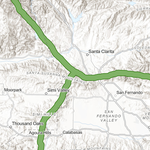

Summary
A least-cost path analysis was conducted using ArcGIS Pro ModelBuilder to identify the optimal routes for wildlife corridors connecting four core mountain lion habitat areas in the greater Los Angeles area. The goal was to maintain population health and genetic diversity by allowing safe passage through fragmented landscapes.
Core Challenge
Urban development has fragmented core habitats (Los Padres, Santa Monica, San Gabriel, and gateway patch Santa Susana), isolating mountain lion populations.
Proposed Solution
Construct wildlife corridors that minimize stress and danger for mountain lions while maximizing connectivity across fragmented habitats.
Methodology
This analysis uses the following key input layers (criteria):
-
Terrain Ruggedness – high ruggedness = how cost
-
Land Cover – dense vegetation = low cost; urban/water = high cost
-
Protected Areas – highly protected = low cost
-
Distance from Roads – further from roads = low cost
Each raster was reclassified or rescaled to a common 1–10 cost scale and combined using the Weighted Sum tool to produce a Combined Cost Surface.
Tools Used
This analysis uses the following ArcGIS geoprocessing tools:
-
Focal Statistics (for ruggedness)
-
Reclassify / Rescale by Function
-
Weighted Sum
-
Optimal Region Connections (to create the least-cost network)
Key Outputs
This analysis generates the following key outputs:
Least-Cost Paths
-
Connect all four habitat patches using the least stressful and dangerous routes.
-
Indicate priority areas for wildlife corridors.
Highway Crossings Identified
-
4 unavoidable intersections with highways.
-
Recommend wildlife overpasses, especially where corridors intersect roads, railroads, or rivers.
Corridor Maps
Each of the following layers was mapped and visualized:
-
Core Habitat Areas
-
Ruggedness and Ruggedness Cost
-
Land Cover and Land Cover Cost
-
Protected Areas and Protection Cost
-
Roads, Distance to Roads, and Distance-to-Roads Cost
-
Final Cost Surface
-
Optimal and Neighboring Paths
-
Wildlife Corridor and Crossing Proposals
Study Area
This map shows the area of interest for this analysis represented here as a black rectangle. The study area is located within the greater Los Angeles area and covers several communities, including San Fernando Valley, Burbank, and Santa Clara, as well as several mountain ranges which span the area.
{kind=link}
Core Mountain Lion Habitat
The study area contains four core habitat areas for mountain lions, represented in purple on this map. The proposed wildlife corridors will connect these areas. While mountain lions can be present in a larger zone around each core habitat, the purple areas represent the highest mountain lion concentrations.
The three habitats identified as Los Padres, Santa Monica, and San Gabriel represent true core mountain lion habitat. They are set in spacious, mountainous natural areas and contain significant mountain lion populations. The Santa Susana location, which was established by the National Park Service and is located just outside of Pico Canyon Park, doesn't represent a significant core area, but it serves as an important geographic gateway for linking the other three geographically disconnected habitat patches to each other.
{kind=link}
Elevation
This map depicts the elevation above sea level. You can see mountainous elevated areas in white and light gray, mid-elevation areas in red and orange, and flatter low-lying valleys in light green and light blue. This layer is processes to derive a new layer which represents the ruggedness.
{kind=link}
Ruggedness
For this analysis, ruggedness is defined by large changes in elevation. In the map below, green areas are more rugged and red areas are less rugged. High, rocky mountain peaks tend to be more rugged, and the low-lying valleys tend to be flatter and smoother. Greater ruggedness signifies a lower cost for the mountain lions, in terms of stress and danger.
{kind=link}
Ruggedness Cost Surface
The ruggedness cost surface looks similar to the ruggedness layer, but it represents cost values varying between 1 and 10. Ruggedness values close to 0 are transformed into the highest cost of 10. Higher ruggedness values are transformed into lower cost values. On this map, low cost values appear in green and the high cost values appear in red.
{kind=link}
Land Cover
This map represents different land cover types, such as evergreen forest or cultivated crops. Each of these land cover types is shown in a different color: the red colors are developed urban areas, while the green colors correspond to forests or grasslands. The brown colors are scrubland or herbaceous areas.
{kind=link}
Land Cover Cost Surface
The land cover layer is transformed into the categorical raster shown in this map. Land cover types that are high in dense vegetation represent less stress and danger for mountain lions, so they are transformed into the lower cost values. Mountain lions feel the most safe in forest and shrub land cover types, although they can also make use of agricultural or open areas. Developed lands are not safe and receive a high cost value. Water-covered areas are assigned the highest cost value, since they are inhospitable for mountain lions. The lower cost land cover types are mostly located in the mountain ranges with a lot of forest and scrubland. The higher cost land cover types tend to be located in the flatter low-lying valleys where most of the human development has taken place.
{kind=link}
Protected Status
This raster map shows the level of protection for land within the study area. This information was derived from the Protected Areas Database of the United States (PAD-US). Highly protected are shown in dark green; areas which are not protected in light green. Areas without a color on the map are not tracked in PAD-US, and usually correspond to urban, agriculture, or other forms of privately exploited areas and usually are the least favorable to mountain lions.
{kind=link}
Protected Status Cost Surface
The protected status cost surface is a categorical raster layer derived from the protected status layer. Areas that are the most protected represent less stress and danger for mountain lions, so they are transformed into the lower cost values. The lowest cost areas located in the mountain ranges are shown in dark green and light green. Areas which are not protected are shown in orange or red. These areas are more stressful for mountain lions.
{kind=link}
Roads
The Roads map represents each road as a red line. It includes all roads ranging from small roads to major highways.
{kind=link}
Distance to Roads
The model processes the roads layer to derive a raster representing the distance from any cell to the nearest roads. It assigns the lowest cost to the cells with the highest distance-to-road values. In this map areas near roads are shown in red and areas far from roads are shown in green.
{kind=link}
Distance to Roads Cost Surface
The model transform the distance to roads layer to the common cost scale using the Rescale by Function tool. Areas that are farther from roads represent less stress and danger for mountain lions, so they should be transformed into lower cost values. In this map low cost areas are shown in green and high cost areas are shown in red.
{kind=link}
Combined Cost Surface
The model combines the individual cost layers into a single cost surface using the Weighted Sum tool. The combined cost surface layer simulates how the mountain lions will experience the landscape as they move through it. In this map green areas represent the lowest cost in terms of stress and danger, while the red areas represent the highest cost, and the beige areas represent a medium cost. The map illustrates that almost all low and medium cost areas are located in mountainous regions.
{kind=link}
Mountain Lion Paths
The model uses the Optimal Region Connections tool to generate a network of paths which connect the four habitat patches with the least cost. The tool uses two inputs: the combined cost surface and the core mountain lion habitats. This network represents the most efficient way of connecting the four core habitat patches, and suggests optimal locations for creating mountain lion corridors. The optimal paths are show in yellow in this map.
{kind=link}
Mountain Lion Paths including Neighbors
This map contains the same paths as the previous map, but it offers additional paths that connect each habitat patch to its lowest cost neighbors. These extra routes are not necessary, but they may provide additional options. The additional paths to lowest cost neighbors can possibly provide alternative routes to reach specific patches.
{kind=link}
Proposed Wildlife Corridors
The optimal paths indicate good routes for developing wildlife corridors to connect the core mountain lion habitats. Even though the paths are as low cost as possible, there is no way to avoid locations near roads in this study area. The paths are almost only through low-cost land cover. The optimum paths do their best to go through protected areas, but much of the valleys and some of the mountainous regions are unprotected, and the paths can't avoid going through these areas. In this map the proposed wildlife corridors are shown in green.
{kind=link}
Highways
Mountain lions could cross smaller roads with a relatively low level of casualty, whereas they would be in tremendous danger whenever attempting to cross a highway. When a wildlife corridor can't avoid crossing a highway, a well-established approach is to build a wildlife overpass to go over it. On this map, highways are displayed as thick orange lines. There are four locations where a proposed route crosses a highway. The Los Angeles area is known for its extensive highway system, so this number of crossings between proposed wildlife corridors and highways is not surprising. Examining the map, it clearly would not be possible for the proposed corridors to avoid crossing these highways, even if longer detours were considered. Therefore, the construction of overpasses is recommended at these four intersections.
{kind=link}
Potential Wildlife Crossings
One example of a proposed crossing is where the route for the wildlife corridor would cross Route 126 and also the Southern Pacific railroad in the same area. A single overpass could probably go over both at the same time, since they are very close to each other. Further south, the Santa Clara River would also need to be reviewed, to see if it's passable by mountain lions. If it isn't, some type of passage would also need to be arranged there. The image below shows the region in the vicinity of the location where the proposed corridor crosses Route 126.
{kind=link}
ModelBuilder Workflow
A ModelBuilder model was created to automate the entire analysis. This model is illustrated in the diagram below. This model makes it easy to:
-
Adjust weights and parameters
-
Add new data layers (e.g. land ownership, wildlife sightings)
-
Apply the workflow to other regions
{kind=link}
Next Steps & Recommendations
-
Build wildlife crossings (overpasses or underpasses) at identified highway intersections.
-
Use this model to guide land-use planning and conservation funding.
-
Continue refining the model with updated data and expert input.
-
Explore the impact of changing the weights of each cost factor.
-
Add additional layers, such as water barriers, human activity zones, or species tracking data.
Conclusion
This project offers a data-driven approach to reconnecting fragmented mountain lion habitats in one of the most urbanized regions of California. It provides a solid foundation for practical, on-the-ground conservation planning—and can serve as a model for similar efforts worldwide.